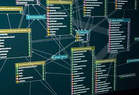
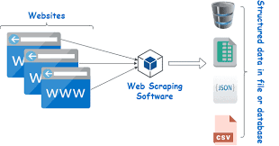

In this project, I cleaned and transformed a large housing dataset using SQL Server. The process involved identifying and handling missing values, removing duplicates, correcting inconsistencies, and standardizing data formats to ensure accuracy. Through a series of optimized SQL queries, I improved the quality and usability of the data, making it ready for further analysis and reporting.


In this project, I performed a comprehensive exploration of a COVID-19 dataset using SQL. I used various querying techniques to uncover trends, patterns, and key statistics related to infection rates, recovery rates, and fatalities across different regions. The exploration provided valuable insights into the pandemic's progression, helping identify significant correlations and anomalies within the data.

In these projects, I leveraged Tableau to create interactive dashboards and compelling visualizations that simplify complex data. By designing dynamic charts and reports, I provided key insights into various datasets, enabling stakeholders to make data-driven decisions with ease. My Tableau work showcases skills in data visualization, storytelling, and dashboard design, covering topics like sales performance, customer demographics, and financial analysis.

In this project, I used Python's Pandas library to clean a customer call list dataset. The process included handling missing data, correcting data types, and removing duplicates to ensure the dataset's integrity. This project demonstrates my ability to clean and prepare raw data for analysis, ensuring accuracy and reliability in data-driven tasks.

This project involved building a Body Mass Index (BMI) calculator using Python. The application calculates BMI based on user input of weight and height, providing a simple but practical tool for health-related calculations. This project highlights my skills in building functional applications with Python, focusing on user input and mathematical operations.

In this project, I utilized Python's BeautifulSoup and requests libraries to scrape real-world data from a website. The dataset, which includes a list of the largest companies in the United States by revenue, was extracted from Wikipedia. The project involved retrieving data from HTML pages, parsing it, and cleaning it to prepare for further analysis.